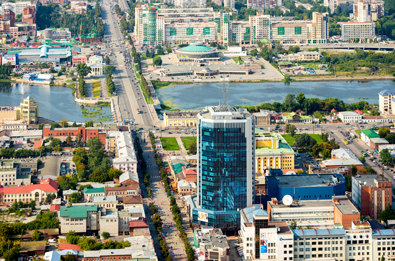
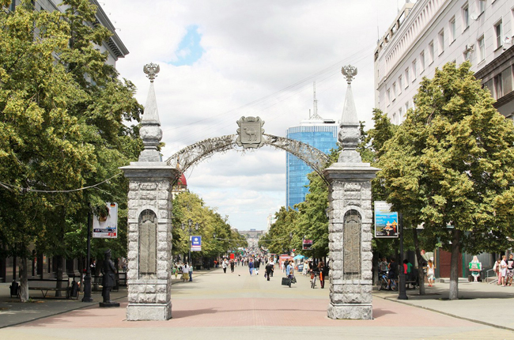
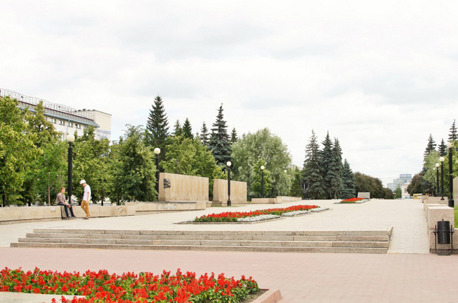

Кировка
Главная артерия города — так называемый «Челябинский Арбат» или улица Кирова, пешеходный проспект в центре города, который практически никогда не пустует.
Вообще, эта улица за свой век успела сменить массу названий: когда-то она была Уфимской, Екатеринбургской, Рабоче-Крестьянской.
 Кроме симпатичных памятников и забавных бронзовых фигур нищего, гитариста, Левши и подкованной им блохи, городового, пожарной кареты, здесь можно найти массу кафешек, где чашечка кофе приятно взбодрит, главпочтамт, с которого подписанная вами открытка с видами Челябинска отправится искать своего адресата, нулевая верста — место дислокации местных музыкантов, оглашающих знакомыми мелодиями гулкую аллею.